Hi! I’m James Poetzscher.
I recently graduated from Stanford (’25), where I spent most of my time thinking about AI and doing math/cs.
I’m a big superintelligence believer; I’m confident it’s the most powerful but also the most high variance thing that we (humans) will ever build.
I don’t believe digital superintelligence will be conscious. I don’t believe consciousness and intelligence are especially related.
I think mainstream SV thinking on who benefits from superintelligence is mostly inverted.
I enjoy thinking about philosophy. I’m a moral arealist who nevertheless spends lots of time thinking about what the ideal moral philosophy/system looks like.
I think most people are macro-silly, micro-serious; they should be the opposite.
I make very good chocolate chip cookies.
Growing up, I lived in both SF and Singapore. I'm currently living in SF
DM me or email me if you find anything here interesting—I'd really love to chat!
Favorite Olympiad Problems
Recently, I’ve become interested in olympiad combinatorics problems (although I also enjoy the occasional number theory problem).
I’ve listed some of my favorite problems I’ve solved at various difficulty levels below (accompanied by their MOHS, as determined by Evan Chen). Yes… they’re all combo.
-
2009 IMO Q6 — MOHS 452009 IMO Q6Let $a_1,a_2,\ldots,a_n$ be distinct positive integers and let $M$ be a set of $n-1$ positive integers not containing $s=a_1+a_2+\ldots+a_n$. A grasshopper is to jump along the real axis, starting at the point $0$ and making $n$ jumps to the right with lengths $a_1,a_2,\ldots,a_n$ in some order. Prove that the order can be chosen in such a way that the grasshopper never lands on any point in $M$.
-
2020 IMO Q3 — MOHS 402020 IMO Q3There are $4n$ pebbles of weights $1, 2, 3, . . . , 4n$. Each pebble is colored in one of $n$ colors and there are four pebbles of each color. Show that we can arrange the pebbles into two piles so that the following two conditions are both satisfied: The total weights of both piles are the same. Each pile contains two pebbles of each color.
-
2023 IMO Q5 — MOHS 352023 IMO Q5Let $n$ be a positive integer. A Japanese triangle consists of $1 + 2 + \dots + n$ circles arranged in an equilateral triangular shape such that for each $i = 1$, $2$, $\dots$, $n$, the $i^{th}$ row contains exactly $i$ circles, exactly one of which is coloured red. A ninja path in a Japanese triangle is a sequence of $n$ circles obtained by starting in the top row, then repeatedly going from a circle to one of the two circles immediately below it and finishing in the bottom row. In terms of n, find the greatest k such that in each Japanese triangle there is a ninja path containing at least k red circles.
-
2020 USEMO Q2 — MOHS 302020 USEMO Q2Calvin and Hobbes play a game. First, Hobbes picks a family $F$ of subsets of $\{1, 2, ..., 2020\}$, known to both players. Then, Calvin and Hobbes take turns choosing a number from $\{1, 2, ..., 2020\}$ which is not already chosen, with Calvin going first, until all numbers are taken (i.e., each player has $1010$ numbers). Calvin wins if he has chosen all the elements of some member of $F$, otherwise Hobbes wins. What is the largest possible size of a family $F$ that Hobbes could pick while still having a winning strategy?
-
2001 IMO Q3 — MOHS 252001 IMO Q3Twenty-one girls and twenty-one boys took part in a mathematical competition. It turned out that each contestant solved at most six problems, and for each pair of a girl and a boy, there was at least one problem that was solved by both the girl and the boy. Show that there is a problem that was solved by at least three girls and at least three boys.
-
2021 IMO Q5 — MOHS 202021 IMO Q5Two squirrels, Bushy and Jumpy, have collected 2021 walnuts for the winter. Jumpy numbers the walnuts from 1 through 2021, and digs 2021 little holes in a circular pattern in the ground around their favourite tree. The next morning Jumpy notices that Bushy had placed one walnut into each hole, but had paid no attention to the numbering. Unhappy, Jumpy decides to reorder the walnuts by performing a sequence of 2021 moves. In the $k$-th move, Jumpy swaps the positions of the two walnuts adjacent to walnut $k$. Prove that there exists a value of $k$ such that, on the $k$-th move, Jumpy swaps some walnuts $a$ and $b$ such that $a < k < b$.
-
2019 USA TSTST Q4 — MOHS 152019 USA TSTST Q4Consider coins with positive real denominations not exceeding $1$. Find the smallest $C > 0$ such that the following holds: if we are given any $100$ such coins with total value $50$, then we can always split them into two stacks of $50$ coins each such that the absolute difference between the total values of the two stacks is at most $C$.
-
2024 USAMO Q4 — MOHS 102024 USAMO Q4Let $m$ and $n$ be positive integers. A circular necklace contains $m n$ beads, each either red or blue. It turned out that no matter how the necklace was cut into $m$ blocks of $n$ consecutive beads, each block had a distinct number of red beads. Determine, with proof, all possible values of the ordered pair $(m, n)$.
-
2011 IMO Q4 — MOHS 52011 IMO Q4Let $n > 0$ be an integer. We are given a balance and $n$ weights of weight $2^0, 2^1,\ldots, 2^{n-1}$ . We are to place each of the $n$ weights on the balance, one after another, in such a way that the right pan is never heavier than the left pan. At each step we choose one of the weights that has not yet been placed on the balance, and place it on either the left pan or the right pan, until all of the weights have been placed. Determine the number of ways in which this can be done.
Favorite Problem
IMO 2021 Q5 — Bushy and Jumpy the Squirrels